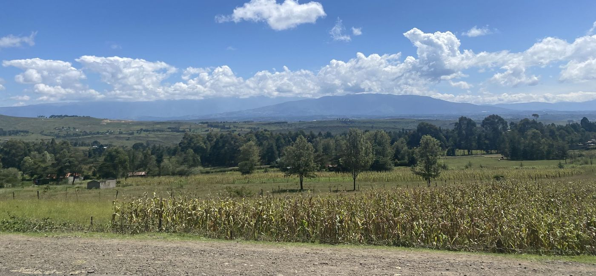
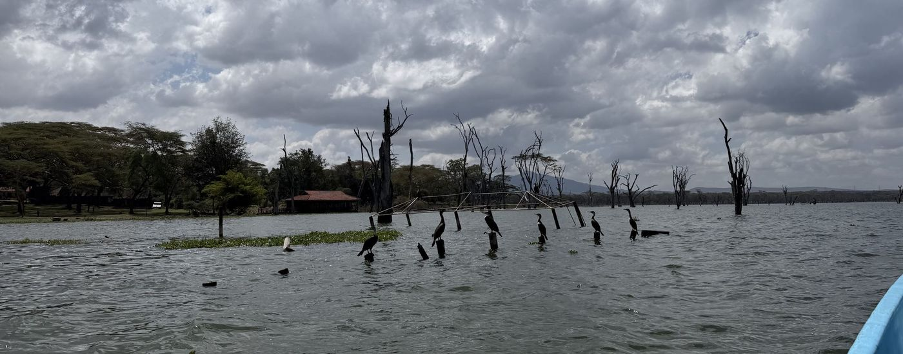

The evidence behind CGIAR’s climate work, in one place
Publications, tools and methods on climate from across CGIAR, each linked to where it is published, with climate and related data on the Climate Data Hub.
Find evidence
What are you looking for?
The data itself
Looking for the datasets, notebooks and tutorials?
The Climate Data Hub is for climate data and the related data used in adaptation, mitigation and risk assessment, with metadata, example notebooks and tutorials for loading it into Python, R or a desktop GIS.
Tools
Featured tools
Four decision tools from the catalogue, each opening on its own site.

Publications
Selected publications
Targets of CGIAR’s Climate Action Science Program, 2025 to 2030
Source: CGIAR Climate Action
CGIAR Climate Action
Climate Action’s five areas of work
CGIAR’s Climate Action Science Program organises its work in five areas. Each hand-picked resource is filed under the one it fits best; select an area to see them.